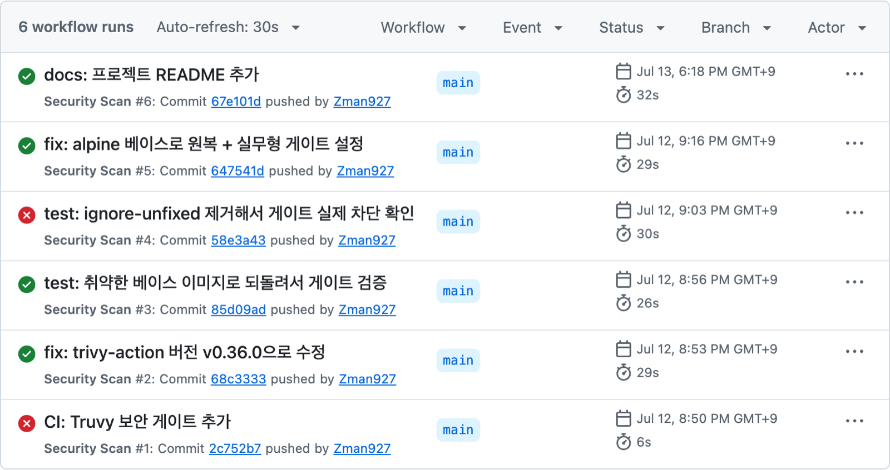
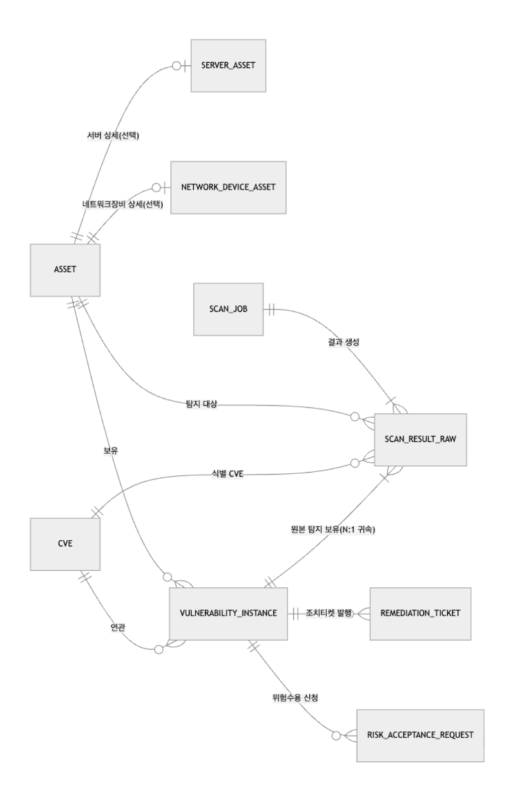

멀티테넌트 인사관리 시스템 백엔드
2026.09 ~ 진행 중, 캡스톤디자인 4인 팀에서 백엔드 담당 (백엔드 2명 중 1명)
전공심화과정 졸업 작품으로 4인 팀이 시작한 프로젝트입니다. 교수님이 주신 요구사항은 ERP 프로그램을 만드는 것이었고, 저희는 여러 회사가 함께 쓰는 인사관리 시스템을 만들었습니다. 저는 백엔드 2명 중 한 명을 맡아 무엇을 만들지 정하고 결과를 확인했고, 코드는 Claude Code가 작성했습니다. 제 담당 PR은 47건이 머지됐습니다.
백엔드가 처음이라 AI가 만든 코드가 맞는지 코드만 보고는 판단하기 어려웠습니다. 그래서 앱을 직접 조작하고 시연 녹화를 보며 확인했고, 직원 등록 화면에 급여 입력이 빠진 것을 찾아 다시 넣게 했습니다. 팀원이 보낸 지적도 바로 반영하지 않고 AI에게 코드로 먼저 확인하게 했는데, 휴가 철회와 최종 승인이 동시에 들어오면 승인이 취소로 덮어써지는 문제가 실제로 있어서 행 잠금으로 고치고 테스트로 확인했습니다.
로컬에서 데모 회사 데이터로 띄운 화면입니다. 화면은 팀원이 만든 프론트엔드이고, 저는 백엔드를 맡았습니다.
한 회사용 설계를 여러 회사가 함께 쓰는 구조로 바꾸기
- 문제
- 처음 설계는 한 회사가 설치해서 쓰는 구조였습니다. 그런데 회사마다 휴가 규정과 급여 방식, 조직도가 달라서, 처음 가입할 때 회사 정보를 입력하고 각 회사 관리자가 직접 설정할 수 있어야 한다고 봤습니다. 여러 회사의 데이터가 한 DB에 있으면 조회 조건에 회사 ID를 한 군데라도 빠뜨렸을 때 다른 회사 데이터가 보이게 됩니다.
- 해결
- 여러 회사가 함께 쓰는 구조로 바꾸게 했고, Claude Code가 구현했습니다. 요청마다 로그인 토큰에서 회사를 꺼내 TenantContext에 담고, Hibernate의 @TenantId로 JPA 엔티티 조회에 회사 조건이 자동으로 붙습니다. 권한은 @RequirePermission과 인터셉터로 검사하고, 팀장이 볼 수 있는 범위(자기 조직과 하위 조직)는 ScopeResolver 한 곳에서 계산합니다.
- 결과
- 이후 만든 API들이 이 공통 기반 위에서 동작하고, 공통 기반은 MockMvc 통합 테스트 31개로 검증했습니다.
- Java
- Spring Boot
- JPA
- PostgreSQL
- JUnit 5
- GitHub Actions
- Docker
GitHub 보기
취약점 관리 API 서버
2026.08, 개인 프로젝트
백엔드를 처음 배우면서 API를 만드는 데서 끝내지 않고, 컨테이너 배포와 보안 검사까지 한 프로젝트에서 이어서 해 보려고 시작했습니다. 주제는 앞서 한 Trivy 실습과 이어지도록 취약점 관리로 정했습니다.
처음 조회, 등록, 수정 API는 Express로 직접 작성했습니다. 그런데 AI가 대신 해 주는 부분이 많을수록 제게 남는 것이 적다고 느껴서, Claude Code가 한 단계씩 구현하고 설명하면 제가 리뷰하고 이해한 흐름을 다시 설명해 보는 방식으로 바꿨습니다. DB 연동, JWT와 bcrypt 인증, 쿠버네티스 배포를 이 방식으로 진행했고, 보안 검사는 고칠 수 있는 취약점만 빌드를 막고 나머지는 전부 기록하는 두 단계 방식을 골랐습니다.
내 코드에 없는 취약점이 빌드를 막은 문제
- 문제
- Trivy 검사가 HIGH 취약점으로 빌드를 막았는데 npm audit 결과는 0건이었습니다. 프로젝트 의존성에 없는 패키지가 이미지 안에 들어 있다는 뜻이었습니다.
- 해결
- Claude Code가 이미지 안에서 해당 패키지 경로를 추적해, 베이스 이미지에 미리 깔린 npm 자체가 가진 패키지라는 것을 찾았습니다. 앱은 실행할 때 npm을 쓰지 않아서, 의존성 설치가 끝난 직후 npm과 npx를 이미지에서 지웠습니다.
- 결과
- 로컬에서 Trivy로 0건을 확인한 뒤 푸시했고, CI 검사를 통과했습니다.
- Node.js
- Express
- PostgreSQL
- Docker
- Kubernetes
- GitHub Actions
- Trivy
GitHub 보기
컨테이너 보안 파이프라인
2026.07, 개인 실습 (AI 코딩 도구 없이 직접)
컨테이너 보안을 직접 해 보고 싶어서 시작한 첫 실습입니다. Python 앱을 Docker 이미지로 만들고 GitHub Actions에서 Trivy로 검사했고, AI 코딩 도구 없이 직접 했습니다.

커밋 순서대로 본 CI 결과(아래가 처음). 3번은 취약한 이미지인데도 통과했고, 4번에서 ignore-unfixed를 빼자 빌드가 막혔습니다
ignore-unfixed 옵션이 CRITICAL 취약점을 조용히 통과시키던 문제
- 문제
- 아직 고칠 수 없는 취약점 때문에 빌드가 계속 막히지 않도록 ignore-unfixed 옵션을 켰더니, 패치가 나오지 않은 CRITICAL 취약점이 아무 기록 없이 통과됐습니다.
- 해결
- 일부러 취약한 베이스 이미지로 되돌려 검사가 빌드를 실제로 막는지 확인하고, ignore-unfixed를 끄고 켜 보면서 이 옵션이 패치 없는 취약점을 기록 없이 통과시킨다는 것을 확인했습니다.
- 결과
- 이후 vuln-tracker에서는 고칠 수 있는 취약점만 빌드를 막고 나머지는 전부 기록하는 두 단계 검사로 나눴습니다.
- Python
- Docker
- Trivy
- GitHub Actions
GitHub 보기
취약점 관리 시스템 설계
2026.09, 소프트웨어공학 4인 팀 설계 과제
소프트웨어공학 수업에서 취약점 관리 시스템의 설계 산출물을 만드는 4인 팀 과제를 받아 시작했습니다. 평가 기준이 설계가 얼마나 깔끔한가였습니다.

ERD 핵심 부분(전체 엔티티 26개 중 9개). 스캐너 원본 결과와 관리 대상 취약점을 나누고, 자산은 공통 테이블과 유형별 테이블로 나눴습니다
도메인 규칙이 설계에 드러나게 요구사항 정리하기
- 문제
- 기능을 나열하는 것보다 도메인 규칙이 설계에 드러나게 하는 것이 어려운 부분이었습니다.
- 해결
- 그 규칙을 요구사항 프롬프트로 먼저 정리했습니다. 스캐너가 보낸 원본 결과와 관리 대상 취약점을 나누고, 위험도와 조치 기한 정책은 테이블로 두고, 자산은 공통 속성과 유형별 속성을 나누는 상속 구조로 하고, 4명이 나눠 맡을 때 파트 간 인터페이스를 명시하라는 내용입니다.
- 결과
- Claude Code가 이 프롬프트로 ERD(엔티티 26개), 기능명세서(기능 43개), 역할 분담안을 작성했습니다.
웹 해킹 보안 교육 플랫폼
2025.04 ~ 2026.05, 캡스톤디자인 4인 팀에서 프론트엔드 담당
캡스톤디자인 과제에서 팀이 보안 전공을 살릴 수 있는 주제로 고른 웹 취약점 실습 교육 플랫폼이고, 거의 처음으로 팀 협업을 하며 제대로 개발해 본 프로젝트입니다. 4인 팀에서 프론트엔드를 맡아 Vue 3와 Quasar로 웹 기초 강의, 취약점 학습 모듈 6개, 워게임 문제 11개, 커뮤니티와 관리자 화면을 만들었고, 막히는 부분은 ChatGPT에 물어 가며 진행했습니다.
서버를 배포하지 않은 상태여서 팀원 컴퓨터에서 켠 백엔드와 제 노트북을 Tailscale로 연결해 테스트했는데, 연결만으로는 안 되고 Axios의 baseURL에 그 주소를 등록해야 한다는 것도 이때 알았습니다. 이 프로젝트로 교내 캡스톤디자인 경진대회 본선에 진출했습니다.
로그인 토큰에서 사용자 정보를 읽는 코드가 계속 맞지 않던 문제
- 문제
- jwt-decode 라이브러리는 3버전과 4버전의 불러오는 방식과 파일 경로가 달라서, 버전을 오가는 동안 토큰에서 사용자 정보를 꺼내는 코드가 계속 맞지 않았습니다.
- 해결
- 4.0.0으로 버전을 고정하고 불러오는 방식을 4버전에 맞춘 뒤, 예전 경로를 쓰던 부분은 빌드 설정에서 새 경로로 연결했습니다.
- 결과
- 토큰을 읽는 코드가 한 가지 방식으로 정리됐고, 지금 레포도 jwt-decode 4.0.0을 씁니다.
GitHub 보기